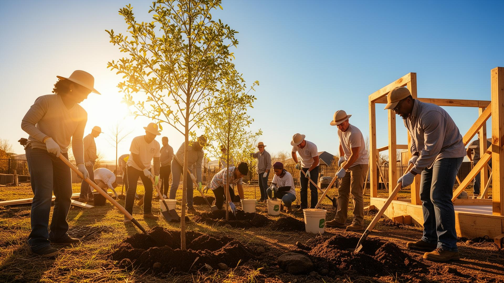

OUR PROGRAMS
Our projects are designed to create lasting impact on communities that need it most.

Providing safe and accessible drinking water to underserved communities. Teaching them about water purification methods and how to save water properly for long-term use.

Distributing hygiene kits to underserved populations and orphans, and educating families on proper hygiene and sanitation practices.

Promoting clean environments through education and community action. Organizing clean-up campaigns, tree planting campaigns, workshops.

We gather underserved communities, youths, parents, and teachers to talk about hygiene, clean water, and proper waste disposal.